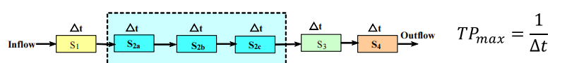
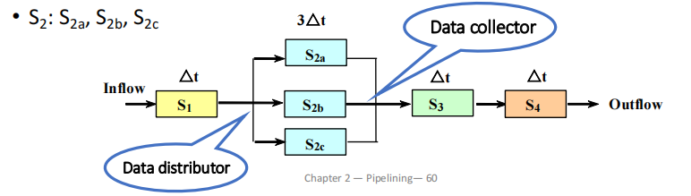
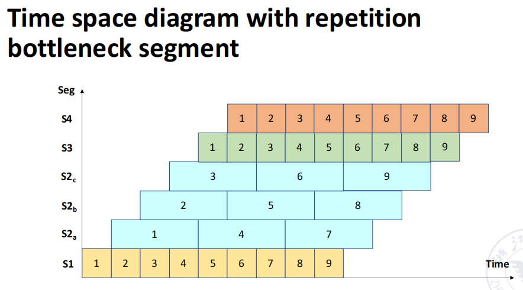

流水线¶
约 3760 个字 34 张图片 预计阅读时间 15 分钟
What is pipelining?¶
有两种方式加速程序的执行
- 缩短每条指令的执行时间
- 例如使用高速设备、提升指令内部微操作的并行度
- 对一段程序整体的执行进行加速
- 使用流水线、多发射等方式
比如一条指令可以被分为 3 个阶段
那么我们就有下面三种执行模式：
- Sequential execution
- Single overlapping execution
- Twice overlapping execution
Sequential execution¶
即按顺序依次执行每一条指令，执行时间等于每条指令的执行时间乘以指令的数量
Overlapping execution¶
重叠执行时，如果不同阶段的时间不一致，那么就可能导致等待，造成资源的浪费；如果不等待，那么用时较长的阶段就可能因同时使用同一份硬件资源而导致冲突。
最理想的情况是每个阶段的时间都相等，就有 single 和 twice overlapping execution 两种方案，即同时有额外的一个或两个指令在执行。
流水线可能产生内存访问冲突，常见的解决方案有
- Instruction memory & data memory
- Instruction cache & data cache (same memory): Harvard structure
- Multibody cross structure (same memory with limitations)
- Adding instruction buffer between memory and instruction decode unit
添加了 buffer 之后，可以在 buffer 满之前一直不停把指令存放到里面，这样取指令的时间就变得很短，此时 IF 就可以和 ID 阶段合并。
但这样合并过后的 ID 阶段的时间也未必与 EX 阶段一致，那么我们可以再给 ID 阶段之后添加一个 buffer，把 decode 的结果存放到这个 buffer 里面，这样下一次的 ID 就不必等到当前的 EX 执行结束才开始。
- 可以看到，上图中
ID K+2在ID K+1完成后就可以立即开始，而不需要等到EX K完成后再开始，这就减少了等待的时间
Classes of pipelining¶
- Single function pipelining（单功能流水线）: only one fixed function pipelining.
-
Multi function pipelining（多功能流水线）: each section of the pipelining can be connected differently for several different functions.
- 执行不同的运算（功能）时会使用流水线中不同的段（某个段可能会被多次使用）
多功能流水线
针对于多功能流水线，还可以继续细分为两种：
-
Static pipelining
静态流水线：同一个时刻流水线内只能做某个特定的功能。
需要执行不同的功能时，需要等待当前的所有功能执行完毕后才可以切换。
-
Dynamic pipelining
动态流水线：同一个时刻流水线可以做多个功能。
执行指令更灵活，但控制起来也更复杂。
静态与动态流水线
横轴表示时间，纵轴表示此时使用到的是流水线的哪一部分硬件（空间资源）。
流水线也可以按照划分粒度的不同进行分类
-
Component level pipelining (in component - operation pipelining)
处理器内部的算术和逻辑操作组件被分为多个段，实现部件级别的流水线
-
Processor level pipelining (inter component - instruction pipelining)
指令级流水线，将指令分为多个子阶段，每个子阶段由不同功能单元执行
-
Inter processor pipelining (inter processor - macro pipelining)
多处理器之间的流水线，将多个处理器连接起来，每个处理器完成一个大任务的一部分
也可以分为线性/非线性流水线
- Linear pipelining
-
Nonlinear pipelining
指令的执行过程可能有回路，某些操作单元可能会被多次使用
还有其他分类方法：
-
顺序与乱序流水线
- Ordered pipelining（顺序流水线）：指令的执行顺序与指令的发射顺序一致
- Disordered pipelining（乱序流水线）：指令的执行顺序与指令的发射顺序不一致
-
标量/向量处理器
- Scalar pipelining（标量流水线）
- Vector pipelining（向量流水线）：
The processor has vector data representation and vector instructions. It is the combination of vector data representation and pipelining technology.
Performance evaluation of pipelining¶
Throughput¶
流水线的目的是提高单位时间内执行的指令数目，即提高吞吐率（throughput）。 $$ TP = \frac{n}{T_K} < TP_{max} $$
假设流水线被分为 \(M\) 段，共有 \(n\) 条指令要执行：
当流水线各个阶段的耗时不等时，最大吞吐率 \(TP_{max}\) 取决于最慢的阶段（bottleneck segment）。
Example
- \(M = 4\)
- Time of S1, S3, S4: \(\Delta t\)
- Time of S2: \(3\Delta t\) (Bottleneck)
流水线中耗时最长的段被称为瓶颈段（bottleneck segment）
吞吐量最大值 \(TP_{max}\) 仅和瓶颈段的时间有关
解决瓶颈问题的方法有两种
-
Subdivision
把瓶颈段分成若干段执行
 -
Repetition
对多条指令的瓶颈段进行重复执行（并行执行），对单条指令而言没有提升，但对多条指令可以提升吞吐率
 
Speedup¶
加速比（speedup）是指在流水线中总的执行时间相较于不使用流水线的提升程度。 $$ Sp = \dfrac{T_{seq}}{T_{pipe}} $$
- if \(n>>m, Sp \approx m\)
Efficiency¶
我们这里定义的效率（efficiency，\(\eta\)）是指对于计算机时空资源的利用程度，对于下面的时空图而言，效率就等于实际使用计算机资源的格子数除以总的格子数。
- if \(n>>m, \eta \approx 1\)
计算流水线性能
假设我们现在有一个静态双功能流水线，要计算两个向量 A 和 B 的点积。
由于这是静态流水线，同一时刻只能做一类事情，一种操作后才能去做另一种操作。
这里我们需要先做乘法，排空流水线，再做加法。需要注意的是，我们需要先让四个乘法结果分成两组相加后，再把它们的结果再相加，需要三次加法运算。
最终得到
- \(T_p = 7/15 \Delta t\)
- \(Sp = \dfrac{4 \times 3 \Delta t + 3 \times 4 \Delta t}{15 \Delta t} = 1.6\)
- \(\eta = \dfrac{4 \times 3 \Delta t + 3 \times 4 \Delta t}{4 \times 15 \Delta t} = 32\%\)
使用动态流水线时可以在同一时刻执行不同类型的操作，因此不需要等待。
需要注意的是在进行乘法操作时，需要占据功能部件 2 的时间为 \(2\Delta t\)
Tip
流水线的级数并不是越多越好，当流水线的级数过多时会导致
- 设计复杂度大大增加
- 需要大量处理在执行中指令之间可能存在的依赖关系
- 控制逻辑会变得非常庞大和复杂
影响多功能流水线相率的因素
- 当多功能流水线执行某个功能时，总有一些用于其他功能的段处于空闲状态
- 在流水线建立过程中（最开始的几条指令刚刚传入流水线），一些段也会处于待使用的空闲状态
- 流水线各段的时间不等时，时钟周期取决于瓶颈段的时间
- 静态流水线在功能切换时，需要清空流水线
- 上一个操作的输出是下一个操作的输入
- 还有一些额外的开销：流水线寄存器的延迟以及时钟偏移（时钟信号到达两个寄存器之间的时间差）
Hazards of Pipelining¶
流水线中的指令依赖主要可以分为以下几种情况：
-
数据依赖（Data Dependences）
后续指令所需要使用到的数据依赖于前一条指令的结果
-
名称依赖（Name Dependences）
后续指令所需要使用到的寄存器与前一条指令所写入的寄存器相同（但是未必存在数据相关）
-
控制依赖（Control Dependences）
某些指令是否执行取决于前面的分支指令的执行结果
Hazard 指的是流水线中由于指令之间的依赖关系而导致的冲突。
- Structural hazards
- A required resource is busy
- Data hazard
- Need to wait for previous instruction to complete its data read/write
- Control hazard
- Deciding on control action depends on previous instruction
Structure Hazards¶
由于对硬件资源的使用冲突而导致的冒险。
例如在一个流水线中只有一块内存，load 和 store 指令为了数据需要访问内存，后续指令的取指操作也需要访问内存，这样就会导致结构冒险。
解决方法只有 stall 或增加硬件资源（包括使用分离的指令内存和数据内存、使用分离的指令 cache 和数据 cache 等）。
Can always solve a structural hazard by adding more hardware
Data Hazards¶
An instruction depends on completion of data access by a previous instruction
包括读后写（RAW）、写后读（WAR）、写后写（WAW）三种情况

通常通过 stall 或者 forwarding 来解决，但 load-use data hazard 无法仅通过 forwarding 解决，在 forwarding 之后还是需要 stall 一个周期
为了尽可能地减少 stall，提高 CPU 的运行效率，也可以对没有相互依赖关系的指令进行调度（Code Scheduling），从而尽可能地减少需要的 stall 周期数。

- 静态调度：程序还没有运行时，编译器为我们优化了代码，改变了指令的执行顺序。
- 动态调度：程序在运行时，处理器为我们优化了代码，改变了指令的执行顺序。
Info
具体如何判断是否出现了 data hazard、出现了之后要从哪个阶段对数据进行 forwarding、要对阶段寄存器如何处理在这里就不详细展开了，具体可见计组笔记。
Summary of Data Hazards
- EX hazard & MEM hazard
- forwarding
- Double hazard
- Revise the forwarding condition
- Load-use hazard
- One stall is needed, except for forwarding
Control Hazards¶
解决办法有几种：
- 直接 stall，直到确定要是否要跳转和要跳转到的地址之后再继续执行后续指令
- predict，在 RISC-V 中一般是 predict not taken，仅在预测错误的时候才 stall
- 也有动态分支预测的技术，即把分支指令的历史结果存储在一个表中，将要执行 branch 指令时就去检查这个表中是否有相应的指令，根据表中的内容来决定是否跳转；如果判断错误了，就 flush 流水线并且调整预测结果
- 将判断 branch 是否跳转的硬件移到 ID 阶段，提前进行判断
Dynamic Branch Prediction¶
Use dynamic prediction
- Branch prediction buffer (aka branch history table)
- Indexed by recent branch instruction addresses
- Stores outcome (taken/not taken)
-
To execute a branch
-
Check table, expect the same outcome
把之前预测的结果存在一个表里，通过历史结果判断未来，根据之前的分支结果预测这次。
-
Start fetching from fall-through or target
- If wrong, flush pipeline and flip prediction
-


Advanced Techniques for Instruction Delivery and Speculation
-
Increasing Instruction Fetch Bandwidth
- Branch-Target Buffers(BTBs)

类似于 TLB，用于存放分支指令以及分支预测的目标地址。
- 如果遇见一条需要跳转的分支指令，但它不在表中，就把它加入到表中；否则就不需要加入表中
- 如果执行一条分支指令时发现它在 BTB 中，但是不需要跳转，就把这条指令从表中移除
-
Specialized Branch Predictors: Predicting Procedure Returns, Indirect Jumps, and Loop Branches
-
Integrated Instruction Fetch Units
一个聚合了综合分支预测、指令预取、指令内存访问等功能的单元
-
-
Benefit
- Get instructions at branch target faster
- It can provide multiple instructions at the branch target once, which is necessary for the multi processor;
- branch folding
- It is possible to achieve unconditional branching without delay, or sometimes conditional branching without delay.
Schedule of Nonlinear pipelining¶
Linear pipelining: Each section of the pipelining is connected serially without feedback loop. When data passes through each segment inthe pipelining, each segment can only flow once at most
Nonlinear pipelining: In addition to the serial connection, there is also a feedback loop in the pipelining
之前我们学到的都是线性流水线，但是有些时候执行某些指令时需要反复用到某些硬件资源，这就会在流水线中形成一条回路，这就是非线性流水线。
非线性流水线会遇到调度问题：我们需要决定何时向流水线中引入一个新的任务（一条新指令）而不会与已经在流水线中的指令发生冲突。
Example

例如这里表的横轴表示时钟的拍数，纵轴表示需要使用的硬件资源。如果随意地向流水线内不断引入新指令，就会导致硬件资源使用的大量冲突

Tip
在这里我们暂且假设进入非线性流水线的指令都是相同的。
解决上述问题的方法是对非线性流水线进行调度，以避免冲突：
-
Initial conflict vector
使用二进制表示，从右往左数第几位是 1 就表示每隔几拍这个指令就会产生冲突
-
Conflict vector
- State transition graph
- Circular queue
- Shortest average interval
Example

首先分别观察每一个部件每隔多少拍会产生冲突：
- 第一个部件每个 8 拍会出现冲突，第二个部件隔 1，5，6 拍会出现冲突，第三个部件不会出现冲突，第四、第五个部件隔 1 拍会出现冲突
- 于是我们把第 1，5，6，8 位二进制数字置为 1，其余为 0，就得到了初始的冲突向量（initial conflict vector）10110001

接着我们可以画一个表格来计算当前的冲突向量（current conflict vector，CCV），它是目前在流水线中的所有冲突向量取交集的结果。
上图中纵轴表示引入第几条指令，横轴表示在隔了几个周期后引入新的指令。（我们暂时只考虑所有指令都相同的情况）
- 比如在上图中，initial 的 CCV 在第 2、3、4、7 位是 0，因此我们可以隔 2、3、4、7 拍后引入新一条的指令
- 我们选择隔 2 拍后引入第二条指令，就把第一条指令的冲突向量右移 2 位（高位补 0），并把移位后的冲突向零与第二条指令的冲突向量按位或起来，得到新的 CCV。
- 现在 CCV 的第 2、7 位是 0，我们可以隔 2 拍或 7 拍后引入第三条指令，以此类推
这样，我们就找到了一个循环调度：2-2-7。
循环调度是不唯一的，我们还可以用类似的方法找到更多的循环调度方法，然后求出平均的间隔（执行完一个循环所需要暂停的周期数除以这个循环中的指令数量）
- 例如 2-2-7 的平均间隔就是 (2+2+7) / 3 = 3.67

Summary
- How the instruction is executed
- Sequential execution
- Overlap once
- Second overlap
- Pipeline
- Classification of pipelines
- Single function, multi-function
- Static, dynamic
- Linear, non-linear
- In-order, out-of-order
- Performance indicators of the pipeline
- Throughput rate
- Speedup ratio effectiveness
- Factors affecting the performance of the pipeline
- Pipeline design
- Type of instructions
- Instructions related
- Data dependence
- Name dependence
- Control dependence
- Dynamic Branch Prediction
- Branch History Table (BHT)
- Branch-Target Buffer (BTB)
- Non-linear pipeline scheduling problem